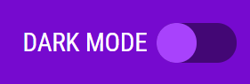

HOW TO PLAY MATCH THE CARDS!
Aim of the game to find all 6 matches by clicking on the cards until you find a match see if you can beat your top score or find all the matches in one shot without getting any matches wrong.
Scoring System
- Find a match and you will earn 5 points.
- Get match wrong and you lose 2 points from your current score.
Reset the game
If you need to reset the game when your trying to beat your high or at any point in the game you can do so by hitting the reset button its beside the "HOW TO PLAY" button and its looks like following,
Dark Mode
If you like to play in the dark and don't want to cause any eye strain from the brightness of the screen we have dark mode feature that you can use its at top of webpage on the right hand side and looks like following,
You can try dark mode button now on this webpage!